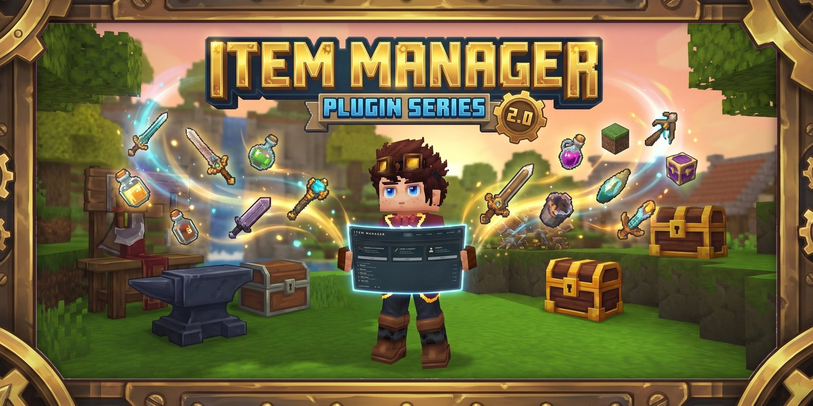
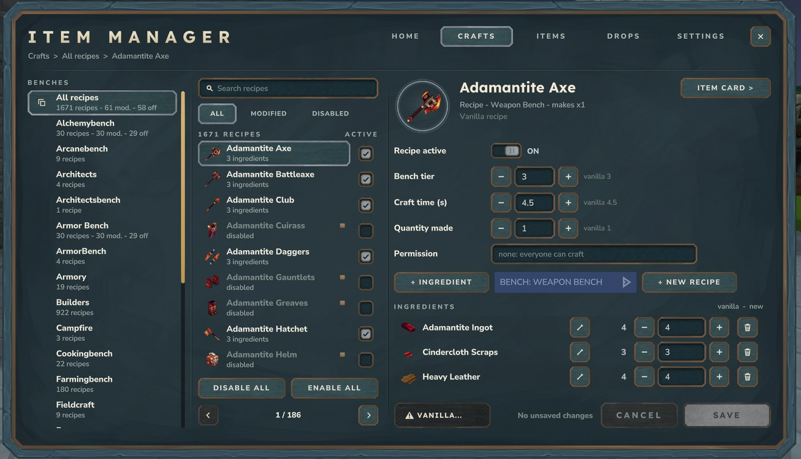

PerfectItemManager

Edit every item of your Hytale server in game: stats, rarity, random roll tiers with affixes, crafting recipes and benches, NPC and block drops, restrictions -- live, without restarting. Version 2.0 brings a brand new admin interface with one search for everything, one Save button and a confirmation before anything is deleted.
| Version | 2.0.1 |
|---|---|
| Platform | Hytale Update 7 (server 0.7.6) -- dedicated server and singleplayer |
| Languages | EN, FR, ES, IT, DE, PT |
| Dependencies | None (DynamicTooltipsLib is shaded in) |
| Price | $14.99 |
Installation
- Put
PerfectItemManager-2.0.1.jarin your server'smodsfolder (singleplayer: enable it in your world's mod list) - Start or restart the server
- Type
/itemmanagerin game
Updating from 1.x? Just replace the jar: your overrides, recipes, drop rules, tiers and settings are kept.
The interface (new in 2.0)

- Home -- one search for items, recipes, NPCs and blocks, a card per section with live counters, and your recent changes (kept after a restart).
- Five tabs, always visible -- HOME, CRAFTS, ITEMS, DROPS, SETTINGS. "Back" always returns exactly where you were (search, filter, page, selected item).
- One save model -- every change is a draft with a counter, Cancel and Save. Close with Esc and the draft is restored next time. Leaving an item with unsaved changes asks Save / Discard / Stay.
- Safe by design -- every dangerous action (reset an item, clear tiers, restore a vanilla recipe, remove drops, multiply all items, reset all) asks first and says exactly what will be deleted.
Items: rarity & stats
ITEMS lists every item of the game, not only craftable ones. Each item has one card with 5 tabs: Rarity & stats, Roll tiers, Recipe, Drops, Restrictions.
- Stats -- Durability, Damage, Armor, Tool speed and Damage variance, shown as vanilla / current / new value / change, with presets +10 %, +25 %, +50 %, x2 and Vanilla, and a live preview of the player tooltip.
- Damage variance -- 0-100 % random spread on every hit, using Hytale's native
randomPercentageModifier. - Per-attack damage -- give each attack of a weapon its own value (stab, thrust, swings, signature...); the others follow the item damage.
- Item rarity -- Common to Legendary, applied to every copy of the item (not to be confused with roll tiers below).
Roll tiers
Weapons and armor can roll their own tier on each copy (drop, pickup, craft, /give). Each rolled copy carries:
- a tier: Common, Uncommon, Rare, Epic or Legendary, with its own colored border
- a damage multiplier applied in combat
- a set of random affixes, shown in its own tooltip with their roll ranges
In the Roll tiers tab: turn tiers on, set each tier's chance (the total must be 100 %), damage multiplier and number of affixes, edit the affix pool, or start from the Weapon / Armor presets. "Give 1 rolled" hands you a fresh copy to test. Rolls are stored on the item itself and survive drops, chests, restarts and world changes.
Affixes
All affixes below work in game since 2.0.1.
Weapon affixes (offensive)
| Affix | Effect |
|---|---|
| Damage Boost | +% damage on every hit (several instances add up) |
| Critical Chance | % chance to land a critical hit (adds up, capped at 100 %) |
| Critical Damage | Damage multiplier on a critical hit |
| Lifesteal | Heals you for a % of the damage you deal (never above max health) |
| Predator | Damage multiplier against targets under 30 % health |
| Speed Boost | +% movement speed while the weapon is in hand |
| Knockback Bonus | +% knockback dealt |
Armor affixes (defensive)
| Affix | Effect |
|---|---|
| Damage Reduction | Reduces incoming damage (capped at 80 % across all armor pieces) |
| Health Bonus | Flat bonus to max health while equipped |
| Thorns | Reflects a % of incoming damage to the attacker |
| Knockback Resistance | Reduces incoming knockback |
| Regeneration | +X health per second while equipped |
Both
| Affix | Effect |
|---|---|
| Durability Bonus | +% max durability, applied when the item is rolled |
Crafts
- Benches with recipe counters, every recipe with an Active box, Disable all / Enable all.
- The recipe card edits bench tier, craft time, quantity made, required permission and ingredients (add, replace, change the amount, remove, restore).
- New in 2.0: create a recipe for an item that has none, move a recipe to another bench, change the quantity made, replace an ingredient.
Drops
- Custom drops for any NPC or block: item, min / max quantity, chance.
- Replace vanilla drops ON: only your drops fall. OFF: they are added to the vanilla drops.
- From an item card, see and edit which NPCs and blocks drop that item. "+ Add items" always brings you back to the same source.
Restrictions
Block dropping or placing an item, with an optional required permission. Players with perfectitemmanager.bypass ignore restrictions. "Block use" and "Block equip" are hidden: Hytale no longer supports them since Update 6.
Settings
- Language of the interface and tooltips, for the whole server (EN, FR, ES, IT, DE, PT).
- Weapon stat tooltips on / off (damage, speed and roll tier lines). When you save a change, every connected player sees the new tooltip instantly.
- Global actions -- no durability loss for every item, multiply all stats (x2, x5, x10), reset everything. All confirmed first.
Commands
| Command | Description |
|---|---|
/itemmanager | Open the Home screen |
/itemmanager <itemId> | Open the card of an item |
/itemmanager crafts [bench] | Open CRAFTS (optionally on a bench) |
/itemmanager drops [npc or block] | Open DROPS (optionally on a source) |
/itemmanager tier <itemId> enable|disable|info|give|menu | Manage the roll tiers of an item |
/itemmanager perattack <itemId> | Open the per-attack damage section |
/itemmanager reload | Reload the configuration from disk |
/itemmanager setlang <EN|FR|ES|IT|DE|PT> | Change the language |
/itemmanager help | Show help |
Permissions
| Permission | Description |
|---|---|
perfectitemmanager.admin | Everything |
perfectitemmanager.menu.crafts | CRAFTS |
perfectitemmanager.menu.stats or .menu.quality | ITEMS |
perfectitemmanager.menu.drops | DROPS |
perfectitemmanager.menu.global | SETTINGS and global actions |
perfectitemmanager.bypass | Ignore item restrictions |
Sections a player cannot use are locked in the interface.
Data files
Everything is saved as JSON in the plugin's data folder (mods/KatsuyaTV_PerfectItemManager/): config.json (language, tooltips), item_overrides.json, craft_overrides.json, drop_rules.json, global_override.json and history.json (recent changes). Rolled tiers are stored on each item.
Credits
Per-copy tooltip and visual override system integrated and adapted from DynamicTooltipsLib by MineAndCraft (CurseForge id 1459711). It is built into the jar -- no external dependency required.
Changelog
- 2.0.1 -- Lifesteal, Predator, Speed Boost and Knockback Bonus now work in game.
- 2.0.0 -- Brand new admin interface; create recipes, move recipes to another bench, change the quantity made, replace ingredients; new commands; rolled items no longer block actions on Update 7; "Block use" / "Block equip" and the Item Creator card removed.
- 1.9.3 -- Hytale Update 7; farmed items were refused as crafting ingredients (repaired automatically).
- 1.9.2 -- Roll tiers, armor effects, damage variance, per-attack damage.
FAQ
Changes don't appear in game?
Press Save: changes are a draft until saved. Tooltips update instantly for every connected player. Use /itemmanager reload after editing the JSON files by hand.
Can I edit vanilla items?
Yes, every item of the game is listed in ITEMS.
Why does my item not roll a tier?
Roll tiers apply to weapons and armor. Turn them on in the item's Roll tiers tab and save. Copies already in inventories keep their roll: use "Give 1 rolled" to test a fresh copy.
Do rolled tiers persist across restarts?
Yes. The roll is stored on the item itself, so it survives drops, chests, restarts and world changes.
Do several Critical Chance affixes stack?
Yes, they add up (capped at 100 %). Same for Damage Boost.